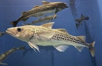

すけとうだら（介党鱈）の漁獲量 都道府県ランキング
全9県の順位と、とれた量
すけとうだらが日本でいちばん多くとれるのは北海道です。11万8,776 tで、全国（12万3,574 t）の96%を占めます。

| 順位 | 都道府県 | 漁獲量 | 全国に占める割合 |
|---|---|---|---|
| 1位 | 北海道 | 11万8,776 t | 96% |
| 2位 | 青森県 | 2,694 t | 2.2% |
| 3位 | 岩手県 | 1,949 t | 1.6% |
| 4位 | 宮城県 | 92 t | 0.1% |
| 5位 | 新潟県 | 23 t | 0.0% |
| 6位 | 福島県 | 10 t | 0.0% |
| 7位 | 秋田県 | 8 t | 0.0% |
| 8位 | 山形県 | 4 t | 0.0% |
| 9位 | 富山県 | 1 t | 0.0% |
この数字について
- 分類：鱈の仲間
- 全国の漁獲量：12万3,574 t
- この数字が表すもの：漁獲量（海でとった重さ。養殖は含みません）
- 調査：海面漁業生産統計調査（海面漁業） 令和6年
- 9県分を調査（調査していない県は順位に入りません）
すけとうだらの漁獲量について、よくある質問
- すけとうだらの漁獲量が日本一の都道府県はどこですか？
- 北海道です。海面漁業生産統計調査（海面漁業）（令和6年）で11万8,776 tでした。
- すけとうだらの漁獲量ランキング2位・3位はどこですか？
- 2位は青森県（2,694 t）、3位は岩手県（1,949 t）です。
- すけとうだらの漁獲量ランキング4位・5位はどこですか？
- 4位は宮城県（92 t）、5位は新潟県（23 t）です。すけとうだらの全9県の順位は上の表のとおりです。
- すけとうだらの全国の漁獲量はどれくらいですか？
- 12万3,574 t（令和6年）です。